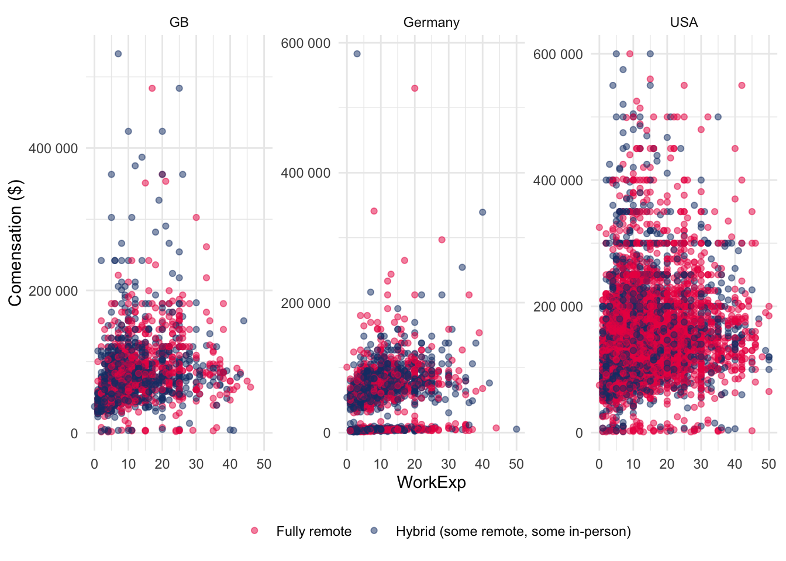
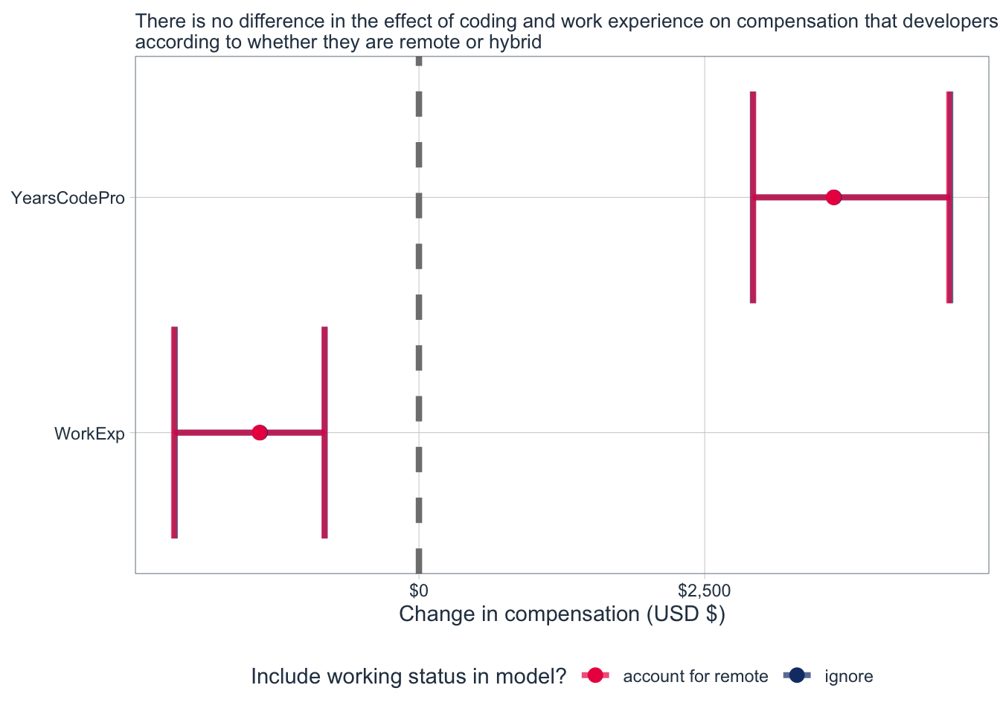

[1] "ResponseId" "Employment" "EdLevel" "YearsCode" "YearsCodePro"
[6] "OrgSize" "Country" "CompTotal" "Currency" "WorkExp"
[11] "RemoteWork" Developer Working Status - Stack Overflow 2022 Survey
Executive Summary
This project is concerned with the Stack Overflow 2022 developer survey, this is a yearly survey conducted by Stack Overflow on developers and their current state of affairs. It covers a range of topics from income to how many years of experience they have and so on. Remote and Hybrid working arrangements have become increasingly important post COVID-19, as hybrid/fully remote arrangements become more popular; it is important that organisations adequately prepare for the. The objectives of this project are as follows. First to engage in exploratory data analysis. Second to understand whether there is a statistically significant difference in the compensation between remote and hybrid developers. Finally to train and screen some models with the view to deploy the best performing one to production.
Data Understanding
The data set contains more than 50 variables, ranging from years of experience to employment etc. For the purposes of this project we will select only a few and only Germany, The United Kingdom and The United States of America will be considered the variables chosen are outlined below:
There is some data cleaning that we need to do, for example, consider the difference in the currencies across the countries in our sample:
| Country | Currency | Count |
|---|---|---|
| Germany | EUR European Euro | 3431 |
| Germany | USD United States dollar | 2 |
| United Kingdom of Great Britain and Northern Ireland | EUR European Euro | 6 |
| United Kingdom of Great Britain and Northern Ireland | GBP Pound sterling | 3039 |
| United Kingdom of Great Britain and Northern Ireland | USD United States dollar | 16 |
| United States of America | EUR European Euro | 1 |
| United States of America | USD United States dollar | 9543 |
We can see that there is a difference in the currencies between the countries, let’s convert the euro and pound sterling to dollar:
Show the code
survey %>%
mutate(
Currency = str_sub(Currency, 1, 3),
Compensation_usd = case_when(
Currency == "GBP" ~ CompTotal * 1.21,
Currency == "EUR" ~ CompTotal * 1.06,
TRUE ~ CompTotal
)
) %>%
select(-CompTotal,-Currency,-ResponseId) %>%
mutate(YearsCode = as.double(YearsCode),
YearsCodePro = as.double(YearsCodePro),
Country = case_when(
Country == "United States of America" ~ "USA",
Country == "United Kingdom of Great Britain and Northern Ireland" ~ "GB",
TRUE ~ Country
)) %>%
na.omit() %>%
filter(Compensation_usd <= 6000000 & Compensation_usd >= 1000) -> survey Warning in mask$eval_all_mutate(quo): NAs introduced by coercion
Warning in mask$eval_all_mutate(quo): NAs introduced by coercionThe exchange rate was determined at the time of writing this project and may be different at the time of reading this. In addition we also changed the columns denoting the numbers of years with coding experience to be numeric, since they where characters, and shortened the country names. Finally we also removed some outliers.
Data Visualisation
Disparities between the compensation among developers depending on geographical region has long been a subject of study. Let’s take a look at this difference for the three countries in the sample:
At a general level it seems that the distributions in each country follow a similar trend, they are right skewed. When comparing the distributions to the median of the compensation for the sample as a whole it becomes clear that, The United States has a larger share of developers earning more than the median compensation, which is $ 110,000. In contrast, the majority of developers in both the United Kingdom and Germany have a total compensation that is below the median.
It would be interesting to see how this relationship holds up when considering other factors such as years coding professionally and working status:

It is somewhat difficult to see whether a pattern exists, however, the plot above demonstrates that the sample size for The United States is much larger than the other countries. If we focus on The United Kingdom on may be able to suggest that there are more hybrid developers earning $200k or more with varying years of professional experience. In contrast, we may say the inverse about developers in Germany. Due to the large sample size for The United States it is much harder to pick out the nuances in the developers earning $200k or more and what level of experience and working status they have.
The relationship between working status and compensation
Focusing on the USA sample, let’s look into the effect size of the years of professional coding and work experience, when considering remote working status and when not taking the effect into account:
Show the code
survey_usa <- survey %>%
filter(Country == "USA")
set.seed(123)
ignore_remote_usa_intervals <- reg_intervals(Compensation_usd ~ YearsCodePro+
WorkExp,
data=survey_usa,
times = 500)
set.seed(123)
account_for_remote_usa <-
reg_intervals(Compensation_usd ~ YearsCodePro+
WorkExp+
RemoteWork,
data=survey_usa,
times = 500)The bootstrapped results show that there is virtually no difference when accounting for remote status. In other words, there is no difference between the effect of years professionally coding and years of work experience on the compensation in USD. Perhaps more importantly we see that the number of years professionally coded actually has a more positive impact on compensation, whereas work experience has a negative effect. Why might this be the case?
Show the code
bind_rows(
ignore_remote_usa_intervals %>% mutate(Remote = "ignore"),
account_for_remote_usa %>% mutate(Remote = "account for remote")
) %>%
filter(!str_detect(term, "Remote")) %>%
ggplot(aes(.estimate, term, color = Remote)) +
geom_vline(xintercept = 0, linewidth = 1.5, lty = 2, color = "gray50") +
geom_errorbar(linewidth = 1.4, alpha = 0.7,
aes(xmin = .lower, xmax = .upper)) +
geom_point(size = 3) +
scale_x_continuous(labels = scales::dollar) +
scale_color_manual(values = values) +
theme(legend.position="bottom") +
labs(x = "Change in compensation (USD $)", y = NULL, color = "Include working status in model?",
subtitle = "There is no difference in the effect of coding and work experience that developers have\naccording to whether they are remote developers or not")+
tidyquant::theme_tq()
Predictive Analytics
Now that we have a better understanding of the data, let’s proceed to build some predictive models that will aid us in predicting whether a developer will opt for being fully remote or hybrid. We begin by creating our training and testing splits, using stratified re-sampling on the outcome variable:
Show the code
set.seed(1234)
Stack_split <- initial_split(survey, strata = RemoteWork)
Stack_train <- training(Stack_split)
Stack_test <- testing(Stack_split)Next we want to specify our pre-processing recipe or our feature engineering steps:
Show the code
Stack_recipe <- recipe(RemoteWork ~ ., data = survey) %>%
step_YeoJohnson(all_numeric_predictors()) %>%
step_normalize(all_numeric_predictors())We applied two preprocessing steps, the first applies the Yeo-Johnson transformation to the data and the second normalises the data. One could argue that only one is needed, however given the anomalies in the data, it would be safe to include both. We can also consider this when selecting the best model as a method for boosting performance.
Let’s begin by specifying three models, all of which we will tune to get good candidates for the final models. The specs for the models are outlined below:
Show the code
glm_spec <-
logistic_reg(mixture = 1) |>
set_engine("glm")
cart_spec <-
decision_tree(cost_complexity = tune(), min_n = tune()) %>%
set_engine("rpart") %>%
set_mode("classification")
tree_spec <-
rand_forest(min_n = tune(),trees=1000) |>
set_engine("ranger") |>
set_mode("classification")In addition, we will also implement 5-fold cross-validation, to make the model selection more robust. This is defined below:
Show the code
set.seed(1234)
Stack_folds <- vfold_cv(Stack_train,strata = RemoteWork,v = 5)Next, we specify a workflow set, which includes all of the models that we specified. This will apply the recipe across the models.
Show the code
doParallel::registerDoParallel()
workflow_set <-
workflow_set(
preproc = list(Stack_recipe),
models = list(
glm = glm_spec,
cart = cart_spec ,
tree = tree_spec)
) Finally we need to set up a tuning grid such that different values for the different parameters can be passed to the relevant models. We set this grid up below, assigning the results to grid_results.
Show the code
# Grid:
grid_ctrl <-
control_grid(
save_pred = TRUE,
parallel_over = "everything",
save_workflow = TRUE
)
grid_results <-
workflow_set %>%
workflow_map(
seed = 1503,
resamples = Stack_folds,
grid = 25,
control = grid_ctrl,
metrics = metric_set(roc_auc,accuracy, sensitivity, specificity)
)We now have a set of candidates for our different types of models. Let’s get a quick summary of the best candidates considering the roc_auc metric:
Show the code
rank_results(grid_results,
rank_metric = "roc_auc",
select_best = TRUE
) |>
gt()| wflow_id | .config | .metric | mean | std_err | n | preprocessor | model | rank |
|---|---|---|---|---|---|---|---|---|
| recipe_glm | Preprocessor1_Model1 | accuracy | 0.6501339 | 0.007533341 | 5 | recipe | logistic_reg | 1 |
| recipe_glm | Preprocessor1_Model1 | roc_auc | 0.6883320 | 0.008206433 | 5 | recipe | logistic_reg | 1 |
| recipe_glm | Preprocessor1_Model1 | sensitivity | 0.7742917 | 0.010852420 | 5 | recipe | logistic_reg | 1 |
| recipe_glm | Preprocessor1_Model1 | specificity | 0.4826992 | 0.006106401 | 5 | recipe | logistic_reg | 1 |
| recipe_tree | Preprocessor1_Model10 | accuracy | 0.6414131 | 0.005782571 | 5 | recipe | rand_forest | 2 |
| recipe_tree | Preprocessor1_Model10 | roc_auc | 0.6817129 | 0.009726259 | 5 | recipe | rand_forest | 2 |
| recipe_tree | Preprocessor1_Model10 | sensitivity | 0.7549134 | 0.012270465 | 5 | recipe | rand_forest | 2 |
| recipe_tree | Preprocessor1_Model10 | specificity | 0.4883598 | 0.015144115 | 5 | recipe | rand_forest | 2 |
| recipe_cart | Preprocessor1_Model11 | accuracy | 0.6352469 | 0.008110769 | 5 | recipe | decision_tree | 3 |
| recipe_cart | Preprocessor1_Model11 | roc_auc | 0.6509728 | 0.008873967 | 5 | recipe | decision_tree | 3 |
| recipe_cart | Preprocessor1_Model11 | sensitivity | 0.7777017 | 0.019648875 | 5 | recipe | decision_tree | 3 |
| recipe_cart | Preprocessor1_Model11 | specificity | 0.4431613 | 0.016071975 | 5 | recipe | decision_tree | 3 |
Performance isn’t great, our accuracy and area under the curve remain between 63% and 68%, for the best model candidates. It seems a simple logistic regression model will do the job, eliminating the need for additional computation that is required for the other models. However, it would be wise to consider other aspects of the performance according to other metrics. This is shown in the figure below, broken down by the model type.
Show the code
grid_results %>%
autoplot()+
theme_minimal()Let’s consider, the decision tree that is rankled 25th. In terms of sensitivity the 25th ranked model, which is a decision tree. We can see that is achieves an accuracy score of around 6.40, whilst in terms of sensitivity it achieves around 0.77, however this comes at the expense of specificity which is just below 0.45. Finally, the area under the curve for this model is 0.65. We can see how these metrics fluctuate for the different model candidates, according to their rank.
In addition to looking at how the metrics fluctuate at the overall level, we can also see how the tuned hyper-parameters affect the metrics. Let’s consider the tuned parameter of the decision tree, minimal node size:
Show the code
grid_results %>%
extract_workflow_set_result("recipe_tree") %>%
autoplot()+
theme_minimal()+
labs(title = "Minimal Node Size Effect on Metrics")For instance if we consider the area under the curve metric at around node size 38, we can see that it comes with a dip in specificity. The trade-off in metrics should be considered when focusing on a specific metric.
By employing a simpler model we will also be saving costs. Let’s extract this model and perform one last train and test on the data:
Show the code
best_model_id <- "recipe_glm"
best_fit <-
grid_results |>
extract_workflow_set_result(best_model_id) |>
select_best(metric = "roc_auc")We then finalise the workflow, implement the final fit and collect the metrics:
Show the code
final_workflow <-
workflow_set |>
extract_workflow(best_model_id) |>
finalize_workflow(best_fit)
final_fit <-
final_workflow |>
last_fit(Stack_split)
final_fit |>
collect_metrics() |>
gt()| .metric | .estimator | .estimate | .config |
|---|---|---|---|
| accuracy | binary | 0.6385759 | Preprocessor1_Model1 |
| roc_auc | binary | 0.6671638 | Preprocessor1_Model1 |
Our accuracy and area under the curve remain at around the same level. Let’s visualise the curve:
Show the code
final_fit %>%
collect_predictions() %>%
roc_curve(RemoteWork,`.pred_Fully remote`) %>%
autoplot()Performance is still not very good but, given everything we have discussed so far it will do. Let’s break down the model performance for each of the classes with a confusion matrix:
Show the code
collect_predictions(final_fit) %>%
conf_mat(RemoteWork, .pred_class) Truth
Prediction Fully remote
Fully remote 986
Hybrid (some remote, some in-person) 288
Truth
Prediction Hybrid (some remote, some in-person)
Fully remote 514
Hybrid (some remote, some in-person) 431Let’s get the variable importance at the overall level:
Show the code
final_fit %>%
pluck(".workflow",1) %>%
extract_fit_parsnip() %>%
vip(geom = "point", aesthetics = list(fill = values[2], alpha = 0.8)) +
scale_x_discrete(labels=label_wrap(35)) +
theme_tq()The plot above demonstrates the variable importance in for the prediction. It seems that The country is the most important variable, being almost 30% more important than the other variables. Compensation in USD and the organisation being 2 to 9 employees large also play a significant role in predicting whether developers would be fully remote.
It would be interesting to see to what extent the predictors are influencing the model, this is shown in the figure below:
Show the code
extract_fit_engine(final_fit) %>%
vi() %>%
group_by(Sign) %>%
slice_max(Importance, n = 15) %>%
ungroup() %>%
ggplot(aes(Importance, fct_reorder(Variable, Importance), fill = Sign)) +
geom_col() +
facet_wrap(vars(Sign), scales = "free_y",ncol = 1) +
scale_y_discrete(labels=label_wrap(40))+
scale_x_continuous(expand = c(0.001,0.001))+
scale_fill_manual(values =values)+
labs(y = NULL) +theme_minimal()+
theme(legend.position = "none")It seems that whether the developer is located in the USA,the type of the contract the developer has, and the organisation being 2-9 employees negatively influence the prediction of the outcome variable. In contrast,the educational level of the developer, the organisation being 10,000 employee or more and being located in Germany positively influence the outcome variable. In other words, the first three variables are drivers of developers adopting a hybrid working arrangement, whilst the other three for developers adopting a fully remote working arrangement.
Conclusion, Recommendations and Future Research Directions
This project explores the Stack Over Flow developer survey for 2022. The changes in the developer landscape, such as the fact that hybrid working arrangements are now included in the survey. Although the survey data contains a lot of country, it was decided that the project would only focus on USA, Germany and the UK. After a brief exploration of the data, the effect of including working arrangement on compensation was tested, yielding no statistically significant difference. Finally, predictive analytics was employed, using a workflowset to screen many models at once, ultimately selecting the best model. To wrap up the project the variable importance was considered as well as the direction of the influence on the prediction.
It could be argued that selecting the best random forest model would have yielded better performance, since the logistic regression model simply used re-sampling with no hyperparameter tuning. This is something that can be explored in future iterations of the project.
Furthermore, the data contains some structural issues, such as the compensation being 0 or absurdly high 1 million+. Whilst this may be possible, it is anticipated that this is due to nature of the data collection, although care was taken to clean up the data, it may be useful to further explore how much this may be an issue. Finally it would also be worth exploring other models, such as an XG Boost model or playing around with the pre-processing recipe.
Session Info
Show the code
sessionInfo() R version 4.2.2 (2022-10-31)
Platform: aarch64-apple-darwin20 (64-bit)
Running under: macOS Ventura 13.1
Matrix products: default
BLAS: /Library/Frameworks/R.framework/Versions/4.2-arm64/Resources/lib/libRblas.0.dylib
LAPACK: /Library/Frameworks/R.framework/Versions/4.2-arm64/Resources/lib/libRlapack.dylib
locale:
[1] en_US.UTF-8/en_US.UTF-8/en_US.UTF-8/C/en_US.UTF-8/en_US.UTF-8
attached base packages:
[1] stats graphics grDevices utils datasets methods base
other attached packages:
[1] ranger_0.14.1 rpart_4.1.19
[3] themis_1.0.0 vip_0.3.2
[5] tidyquant_1.0.6 quantmod_0.4.20
[7] TTR_0.24.3 PerformanceAnalytics_2.0.4
[9] xts_0.12.2 zoo_1.8-11
[11] lubridate_1.9.1 gt_0.8.0
[13] yardstick_1.1.0 workflowsets_1.0.0
[15] workflows_1.1.2 tune_1.0.1
[17] rsample_1.1.1 recipes_1.0.3
[19] parsnip_1.0.3 modeldata_1.0.1
[21] infer_1.0.4 dials_1.1.0
[23] scales_1.2.1 broom_1.0.2
[25] tidymodels_1.0.0 forcats_0.5.2
[27] stringr_1.5.0 dplyr_1.0.10
[29] purrr_1.0.1 readr_2.1.3
[31] tidyr_1.3.0 tibble_3.1.8
[33] ggplot2_3.4.0 tidyverse_1.3.2
loaded via a namespace (and not attached):
[1] googledrive_2.0.0 colorspace_2.1-0 ellipsis_0.3.2
[4] class_7.3-20 fs_1.6.0 rstudioapi_0.14
[7] farver_2.1.1 listenv_0.9.0 furrr_0.3.1
[10] bit64_4.0.5 prodlim_2019.11.13 fansi_1.0.4
[13] xml2_1.3.3 codetools_0.2-18 splines_4.2.2
[16] doParallel_1.0.17 knitr_1.42 jsonlite_1.8.4
[19] dbplyr_2.2.1 compiler_4.2.2 httr_1.4.4
[22] backports_1.4.1 assertthat_0.2.1 Matrix_1.5-1
[25] fastmap_1.1.0 gargle_1.2.1 cli_3.6.0
[28] htmltools_0.5.4 tools_4.2.2 gtable_0.3.1
[31] glue_1.6.2 Rcpp_1.0.10 cellranger_1.1.0
[34] DiceDesign_1.9 vctrs_0.5.2 iterators_1.0.14
[37] timeDate_4021.107 gower_1.0.1 xfun_0.36
[40] globals_0.16.2 rvest_1.0.3 timechange_0.2.0
[43] lifecycle_1.0.3 pacman_0.5.1 googlesheets4_1.0.1
[46] future_1.30.0 MASS_7.3-58.1 ipred_0.9-13
[49] vroom_1.6.0 hms_1.1.2 parallel_4.2.2
[52] curl_5.0.0 yaml_2.3.7 gridExtra_2.3
[55] sass_0.4.5 stringi_1.7.12 foreach_1.5.2
[58] lhs_1.1.6 hardhat_1.2.0 lava_1.7.0
[61] rlang_1.0.6 pkgconfig_2.0.3 evaluate_0.20
[64] lattice_0.20-45 labeling_0.4.2 htmlwidgets_1.6.1
[67] bit_4.0.5 tidyselect_1.2.0 parallelly_1.33.0
[70] magrittr_2.0.3 R6_2.5.1 generics_0.1.3
[73] DBI_1.1.3 pillar_1.8.1 haven_2.5.1
[76] withr_2.5.0 survival_3.4-0 nnet_7.3-18
[79] ROSE_0.0-4 future.apply_1.10.0 modelr_0.1.10
[82] crayon_1.5.2 Quandl_2.11.0 utf8_1.2.2
[85] tzdb_0.3.0 rmarkdown_2.20 grid_4.2.2
[88] readxl_1.4.1 reprex_2.0.2 digest_0.6.31
[91] munsell_0.5.0 GPfit_1.0-8 quadprog_1.5-8